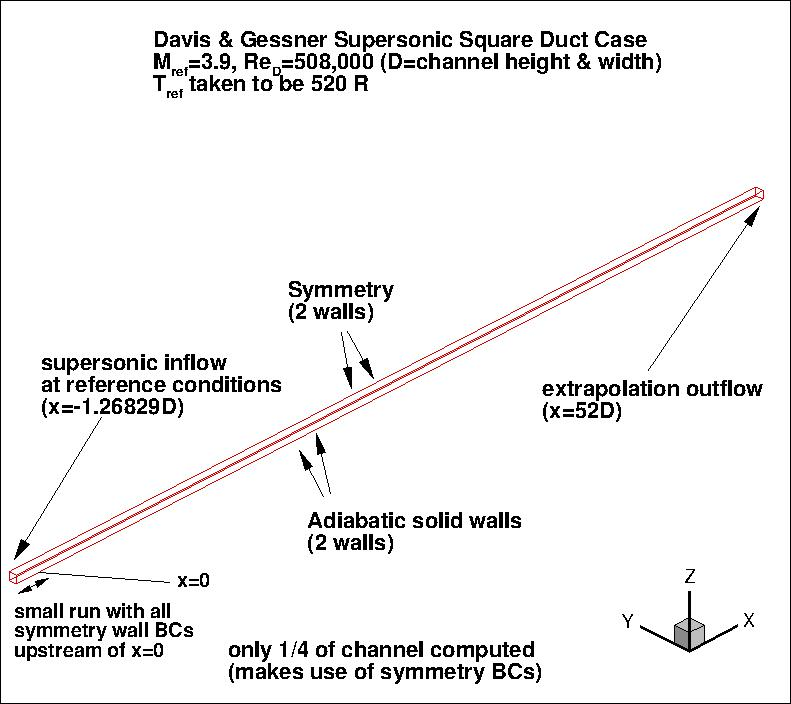
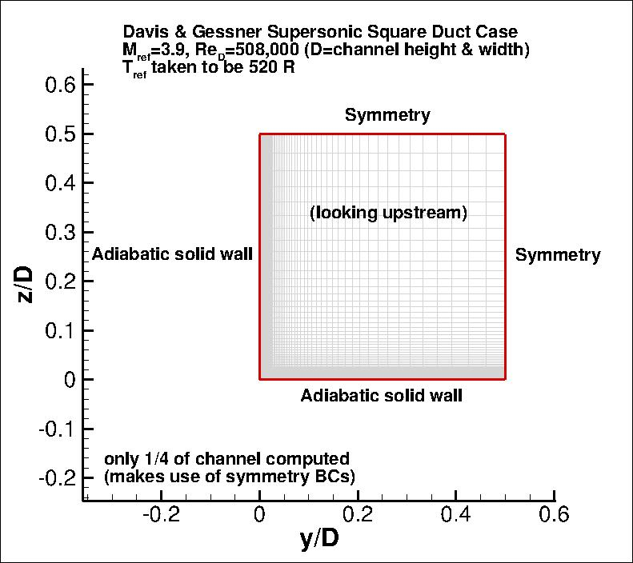

Public Access (formerly Langley Research Center)Turbulence Modeling Resource |
Return to: Turbulence Modeling Resource Home Page
TURBULENCE MODEL NUMERICAL ANALYSIS
3D Modified Supersonic Square Duct Validation Case
This case is designed primarily for numerical analysis of turbulence model simulations;
e.g., convergence properties, effect of order of accuracy, etc.
This case is almost the same as the
3D Supersonic Square Duct Validation Case, except that here,
the grid is extended upstream of x=0 (to x=-1.26829), to allow for
a small run of symmetry side wall boundary conditions prior to the start of the duct.
The grid sizes have also been modified from the original grids.
The primary focus of this case is to assess turbulence models for internal duct flow with
corners. In such cases, turbulent anisotropies can be important because normal stress differences
induce flowfield behavior that cannot be captured with models that make use of the
Boussinesq assumption.
The reference Mach number is 3.9, and the flow develops over a length of 50 D.
As we are interested in comparing data at 50 D, the CFD grid is made slightly longer: 52 D.
The walls of the duct are modeled as adiabatic solid walls, although due to symmetry only
one quarter of the duct is computed, and symmetry boundary conditions are applied on two boundaries.
The following plots shows the layout of this case, along with the boundary conditions.


The experimental data for this case can be found on the original
3D Supersonic Square Duct Validation Case page.
What to Expect:
(Other turbulence model results may be added in the future.)
Return to: Turbulence Modeling Resource Home Page
RESULTS
LINK TO EQUATIONS
MRR Level
SA-QCR2000
SA-QCR2000 eqns
1
Page Curators: Christopher Rumsey,
Ethan Vogel,
Clark Pederson
Last Updated: 01/05/2017